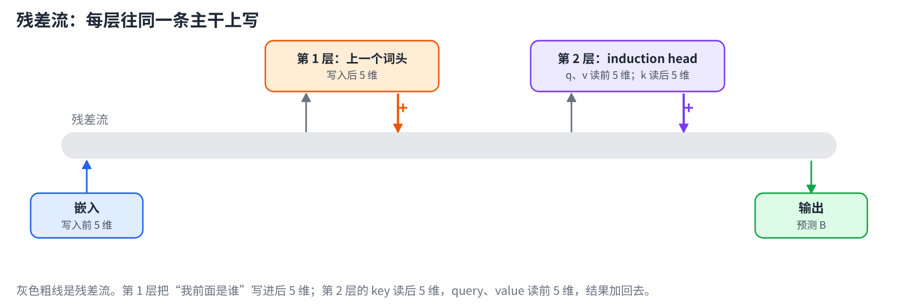
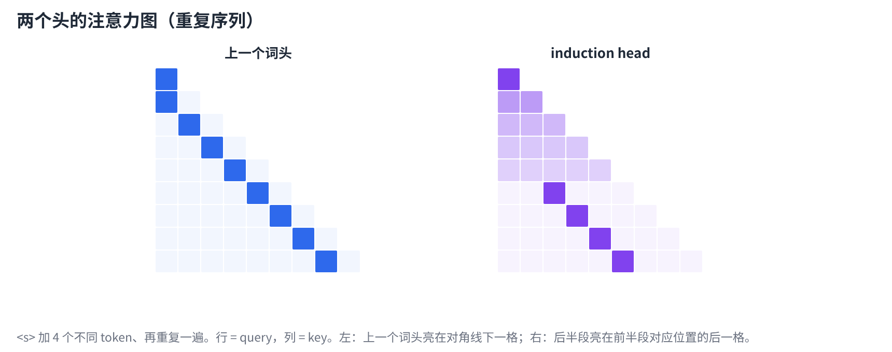

第 10 章 · 残差流与 induction head：模型怎么学会“照着前面抄”
本地运行
git clone https://github.com/wikieden/beyond-transformer
cd beyond-transformer/code/notebooks
pip install jupyterlab torch numpy
jupyter lab ch10_induction_heads.ipynb也可以下载后直接用 VS Code 打开 .ipynb 运行。需要 GPU 的章节在 Colab 里选「代码执行程序 → 更改运行时类型 → GPU」。
本章回答：一层层的注意力和 MLP，到底在一条什么样的“主干道”上读写？两个注意力头怎么配合，就能做到“前面出现过 A B，现在又看到 A，就猜 B”？为什么说这个小电路是“上下文学习”（in-context learning）的一个来源？
讲解日期：2026-11-25 · 上一章：第 9 章 BERT · 下一章：第 11 章 读原版源码
对应原文：In-context Learning and Induction Headstransformer-deep-dive/materials/text/papers/induction-heads-2209.11895.txt摘要 L19–L25（induction head 与 loss 曲线上的“鼓包”）、引言 L40–L52（[A][B] … [A] → [B]，previous token head + induction head 两个头的电路）、K-composition L778–L795（induction head 的 W_K 读前一个头写进的子空间）、残差流 L469、L706
本章缩写：residual stream（残差流：每层都往上加东西的那条主干向量）；previous token head（上一个词头：把前一个 token 的信息复制到当前位置）；induction head（归纳头：找“前一个词是当前词”的位置，把那个位置的词复制出来）；K-composition（K 组合：后一个头的 key 读前一个头写进来的信息）；in-context learning（上下文学习：不改参数，只靠提示里的例子学会新任务）；one-hot（独热向量）；<s>（句首标记）。全部缩写见 附录 · 缩写与术语表
讲解
第一步：残差流：每层都往同一条主干上“加”东西（2026-11-25）
类比：一块共享的白板。 一群专家轮流上台，每人看一眼白板上已有的内容，在上面添几笔，不擦掉别人写的。白板就是残差流，每个注意力头、每个 MLP 都是一个专家。
第 7 章的 Algorithm 10 里，每层都是“X ← X + 子层(X)”。展开来，最后一层的输出就是
每个组件读残差流（通过自己的 W_Q、W_K、W_V），再把结果写回去（加上去）。因为是加法，不同组件可以把信息写进残差流的不同子空间（不同的方向），互不干扰；后面的组件可以专门去读某个子空间。这是理解 induction head 的关键（L469、L706）。
数字演示：玩具残差流 10 维，前 5 维存“当前 token 是谁”（one-hot），后 5 维先空着。序列 <s> A B C D A，最后一个位置（A）的 \(x_0\) = [0, 1, 0, 0, 0 | 0, 0, 0, 0, 0]。

图 10-1 · 残差流是一条从嵌入通到输出的主干（灰色粗线）。第 1 层的上一个词头把信息写进后 5 维（橙色子空间），第 2 层的 induction head 从这个子空间读 key、从前 5 维（蓝色子空间）读 value，再把结果写回去一句话：残差流是一条每层只加不擦的主干；各组件可以把信息写进不同的子空间，后面的组件专门读它要的那块。
第二步：第 1 层：上一个词头，把“我前面是谁”写进来（2026-11-25）
类比：每个人在胸前贴一张纸条，写上“排在我前面的是谁”。
上一个词头的注意力只看位置 i − 1（这里用位置信息手写出来），把那个位置的“当前 token”复制到自己的后 5 维：
| 位置 | token | 注意力看哪 | 写进后 5 维的 | 残差流之后 |
|---|---|---|---|---|
| 0 | <s> |
0（自己，前面没人） | <s> |
当前 <s>，前一个 <s> |
| 1 | A | 0 | <s> |
当前 A，前一个 <s> |
| 2 | B | 1 | A | 当前 B，前一个 A |
| 3 | C | 2 | B | 当前 C，前一个 B |
| 4 | D | 3 | C | 当前 D，前一个 C |
| 5 | A | 4（权重 0.9998） | D | 当前 A，前一个 D |
位置 2 的残差流变成 [0, 0, 1, 0, 0 | 0, 1, 0, 0, 0]：前 5 维说“我是 B”，后 5 维说“我前面是 A”。原文（L48–L50）：第一个头“copies information from the previous token into the next token”。
为什么要 <s>：位置 0 前面没有词，只能看自己。如果第一个词就是 A，它会在后 5 维写上“前一个是 A”，后面就会被误认为“A 后面的那个词”。加一个句首标记，位置 0 写的是 <s>，不会和任何真实的词混淆。
一句话：上一个词头让每个位置去看它前一个位置，把那个 token 写进残差流的另一块子空间：“我前面是谁”。
第三步：第 2 层：induction head，用“当前词”去找“前面是它”的位置（2026-11-25）
类比：最后一个人手里拿着 A，大声问：“谁胸前的纸条写着‘我前面是 A’？” 举手的人是 B，他就把 B 报出来。
induction head 的 query、key、value 读的是残差流的不同子空间：
| 读哪块 | 意思 | |
|---|---|---|
| query | 前 5 维（当前 token） | “我是 A” |
| key | 后 5 维（前一个 token，第 1 层写的） | “我前面是 …” |
| value | 前 5 维（那个位置的当前 token） | “我是 …”，被选中就把它复制出去 |
分数 = query · key：只有“前一个 token 等于当前 token”的位置得高分。这就是原文说的 K-composition（L778–L795）：induction head 的 W_K 读的是前一个头写进来的子空间。
数字演示（最后一个位置 A，分数乘 10 再 softmax）：
| 位置 | 0 | 1 | 2 | 3 | 4 | 5 |
|---|---|---|---|---|---|---|
| 前一个 token | <s> |
<s> |
A | B | C | D |
| 注意力 | 0 | 0 | 0.9998 | 0 | 0 | 0 |
复制出来的是位置 2 的当前 token：[0, 0, 1, 0, 0] = B。预测下一个是 B，正是 [A][B] … [A] → [B]（L46）。
换一个序列 <s> C A D B C：最后的 C 去找“前面是 C”的位置，是位置 2（A），预测 A。电路里没有存任何具体的词对，它学会的是“照着前面抄”这个算法，所以对从没见过的组合也有效。

图 10-2 · 一段重复的随机序列（前半和后半一样）上，两个头的注意力图（行 = query 位置，列 = key 位置）。左：上一个词头，亮在主对角线下方一格；右：induction head，后半段每个位置亮在“前半段对应位置的后一格”，是一条错开的斜线一句话：induction head 的 query 是当前词、key 是“每个位置前一个词”、value 是那个位置的词：找到“前面是我”的位置，就把它后面的词复制出来。
第四步：为什么说它是上下文学习的来源（2026-11-25）
原文（摘要 L19–L25、L71–L78）的主要证据：
- 训练过程中，模型会在某个时刻突然长出 induction head，同时训练 loss 曲线上出现一个小“鼓包”（phase change），上下文学习的能力（序列后面的 token 比前面的猜得准多少）也在同一时刻跳上去；
- 改动结构让 induction head 提前或推后出现，这个跳变也跟着提前或推后；
- 把 induction head 去掉，上下文学习能力大幅下降。
直观上，few-shot 提示（“英译中：cat → 猫，dog → 狗，bird → ?”）需要的正是“在前面找到相似的模式、照着补全”，induction head 是其中最基本的一块，更复杂的模型里还有“模糊匹配”的版本（L64–L67）。
这条电路必须两层：一层的注意力头只能看 token 本身，做不到“找前一个词是 A 的位置”，必须先有一个头把“前一个词”写进残差流。
场景代码：用 TransformerLens 在真实模型里找 induction head（真实库调用；本书环境没装 transformer_lens，没跑过）：
model = HookedTransformer.from_pretrained("gpt2-small")
seq = torch.randint(1000, 10000, (1, 50)); tokens = torch.cat([seq, seq], 1) # 随机序列重复两遍
_, cache = model.run_with_cache(tokens)
for l in range(model.cfg.n_layers):
pat = cache["pattern", l][0] # (头, query, key)
score = pat.diagonal(offset=-49, dim1=1, dim2=2).mean(-1) # 看“前半段对应位置的后一格”
print(l, score.round(decimals=2)) # 分数接近 1 的就是 induction head
在自己的小模型上训练、看 induction head 自己长出来，是里程碑 T-M2。
一句话：induction head 出现的时刻正是上下文学习能力跳升、loss 出现鼓包的时刻，去掉它能力就掉；它要两层才能搭出来。
动画演示：两个头配合，完成“照着前面抄”

可交互版：animations/10-induction-heads.html（▶ 播放 / → 单步；下拉换序列）。
怎么看：
- 一排 token，每个下面有两格：上格是“我是谁”，下格是“我前面是谁”（一开始空着）（第一步）；
- 第 1 层：每个位置伸一条线到前一个位置，把它的 token 抄进自己的下格（第二步）；
- 第 2 层：最后一个位置拿着自己的 token，逐个比对每个位置的下格，匹配的那一格亮起，把它上格的 token 复制出来当预测（第三步）。
练习与作答记录
题 1（第二、三步）：序列 <s> X Y Z X，第 1 层之后每个位置的“前一个 token”是什么？induction head 在最后一个位置会注意哪个位置、预测什么？
题 2（第二、三步）：如果第 1 层的头看的不是 i − 1，而是 i − 2（隔一个位置），第 2 层还是同样的 induction head，整个电路会完成什么样的模式？用 [A][?][B] … 的写法表示。
题 3（第三步）：序列 <s> A B C A D A，最后一个 A 前面出现过两次 A（后面分别跟着 B 和 D）。这个手搭的 induction head 会怎么分配注意力，预测是什么？
题 4（第四步）：场景代码里找 induction head 时，为什么用“随机 token 重复两遍”，而不是一段正常的文章？
口诀
残差流是共享白板，每层只加不擦；写进不同子空间，后面的头各读各的。
第一头看前一位，把“我前面是谁”贴胸前。
第二头拿着自己去比纸条，前面是我的那位，把他报出来。
A B 再见 A，就猜 B；学的是算法，不是词对。
两层才搭得出，长出来那刻 loss 鼓个包，上下文学习跟着跳。
本章复习卡片
必背：B36–B37（B36 残差流与子空间读写；B37 previous token head + induction head 的电路和它与上下文学习的关系）。练习做完后，按答错、卡住的地方再补。
附录 · 延伸阅读
留给以后深入学习用，不影响本章主线。★ 是建议先读的。
推荐阅读
| 读什么 | 读哪里 | 读它为了什么 |
|---|---|---|
| ★ In-context Learning and Induction Heads（Olsson 等 2022） | 摘要 L19–L25；引言 L40–L78；机制 L778–L817 | induction head 的电路和六条证据 |
| ★ A Mathematical Framework for Transformer Circuits（Elhage 等 2021） | 残差流、QK / OV 电路（本地没有文本版） | 残差流视角的出处 |
| 前作 第 18 章 残差 | 全部 | 残差连接为什么好训 |
| TransformerLens 文档（在线） | Getting Started | 在真实模型里看注意力图、做消融 |
数学原理
- 残差流的线性分解：x_L = x_0 + Σ 各组件输出；只看注意力的模型里，logits 是各条“路径”贡献之和。
- 子空间读写：组件 A 写进方向集合 S，组件 B 的 W_K 只在 S 上有非零响应，就能“专门读”A 的结果（K-composition）。
- QK 电路：分数 = x_qᵀ W_Qᵀ W_K x_k；induction head 的 W_Qᵀ W_K 把“当前 token”对到“前一个 token”的子空间。
- OV 电路：输出 = W_O W_V x_k；induction head 的 OV 是“复制”（把 value 的 token 原样写到输出方向）。
公式清单
| 公式 | 意思 |
|---|---|
| \(x_L = x_0 + \sum \text{组件输出}\) | 残差流 |
| \(a_{ij} \propto \exp(\beta\,[j = i-1])\) | 上一个词头的注意力 |
| \(\text{score}_{ij} = q_i^\top k_j\)，\(q\) = 当前 token，\(k\) = 前一个 token | induction head 的打分 |
| [A][B] … [A] → [B] | induction head 完成的模式 |
代码对照：把本章的数字用代码算一遍
NumPy。代码在仓库本地
beyond-transformer/solutions/chapter-code/ch10_induction_heads.py，配套测试tests/test_ch10.py，notebook 在notebooks/ch10_induction_heads.ipynb：
bash cd beyond-transformer/solutions/chapter-code uv run python ch10_induction_heads.py uv run pytest tests/test_ch10.py
讲义 ↔ 代码：
| 讲义 | 公式 | 写法 | 跑出来 |
|---|---|---|---|
| 第一步 残差流 | 前 5 维 one-hot | embed(SEQ) |
最后一行 = A |
| 第二步 上一个词头 | 看 i − 1、写后 5 维 | prev_token_head(x0) |
每行看 [0, 0, 1, 2, 3, 4] |
| 第三步 induction head | q 前 5 维、k 后 5 维 | induction_head(x1) |
看位置 2，预测 B |
| 第三步 换序列 | 同上 | run([0, 3, 1, 4, 2, 3]) |
预测 A |
关键几行：
out[:, V:] = a @ x[:, :V] # 上一个词头：把前一个 token 写进后 5 维
x1 = x0 + w1 # 残差流：加进去，不覆盖
q, k, v = x[:, :V], x[:, V:], x[:, :V] # induction head：q 读当前、k 读“前一个”、v 读当前
s = beta * q @ k.T # 当前 token 和“前一个 token”比对
代码里才看得到的 2 件事：
- 权重是手搭的：两个头的“读哪块、写哪块”直接用切片写死，相当于 W_Q、W_K、W_V、W_O 是选取子空间的 0/1 矩阵。真实模型要从数据里学出这样的矩阵，而且子空间不会这么整齐。
- 位置信息是手写的：上一个词头的“只看 i − 1”直接写在分数里；真实模型要靠位置编码（RoPE 等）学会。在自己的模型上训练、看它们长出来留给里程碑 T-M2。
自己改一改（不影响练习答案）：
- 把
induction_head的 beta 改成 1，注意力还那么集中吗？预测还对吗？ - 去掉第 1 层（x1 = x0），induction head 的 key 全是 0，注意力会变成什么样？